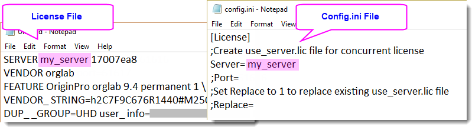
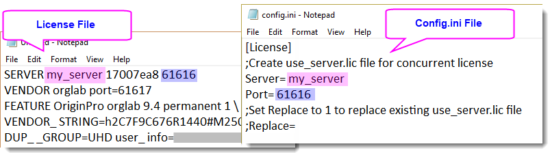

Origin auf den Computern der Anwender oder einem Dateiserver installieren bzw. es an diese verteilen
Multi-userDeployment
Diese Seite enthält die Dokumentation zum Deployment sowohl für Concurrent-Netzwerk- als auch für rechnergebundene Gruppenlizenzpakete (Node-Locked).
Dinge, die vor dem Start zu bedenken sind
OriginLab bietet zwei Typen von Installationsprogrammen:
-
- InstallShield Setup - Verfügbar auf der DVD, durch den Download der Demoversion und über einen Download-Link in einer E-Mail nach dem Kauf. (Hinweis: Für die Verteilung an mehrere Benutzer laden Sie bitte das .zip-Format und nicht das .exe-Format herunter.)
- MSI Installer - Kann hier heruntergeladen werden.
Vorteile des InstallShield Setup
- Der Vorteil des InstallShield Setup besteht darin, dass es prüft, ob sich die erforderlichen Microsoft (MS) DLLs auf dem Computer befinden. Falls nicht, führt das InstallShield Setup automatisch die entsprechenden MS-Installationsprogramme aus, um die DLLs zu installieren.
- Dies unterscheidet es von den MSI - die MSI Installer von Origin können die MS-Installationsprogramme nicht automatisch ausführen. Falls Sie Origin also über ein MSI verteilen, möchten Sie vielleicht die MS-Installationsprogramme und eine Batch-Datei einbinden, um sie zu installieren.
Vorteile der MSI-Installationsprogramme
- Um Origin mit Group Policy(GPO) zu verteilen, können Sie nur das MSI Installer und nicht das InstallShield Setup wählen.
- Der MSI Installer ermöglicht Ihnen das Vorbereiten eines Skripts, so dass Anwender Origin still installieren können. Eine .ini-Datei wird verwendet, um die Seriennummer, den Installationsordner, den Anwenderdateiordner (Anwender werden beim ersten Start aufgefordert, diesen auszuwählen) etc. voreinzustellen. Bei Concurrent-Paketen können Sie auch den FLEXnet-Server voreinstellen.
- Auch wenn das InstallShield Setup eine .ini-Datei verwenden kann, ist der MSI Installer der bevorzugte Typ für die Verteilung an mehrere Benutzer. Er erlaubt Administratoren das Verwenden einer anderen "Transformation" (MST-Datei), um eine weiterführende Konfiguration festzulegen oder Daten in der Datenbank der MSI-Installation zu ersetzen. Weitere Informationen zu Transformationen können Sie hier finden.
Die folgenden Anweisungen gelten sowohl für das InstallShield Setup als auch den MSI Installer.
Ihre benutzerdefinierten Einstellungen mit dem Installer vorbereiten
Installationseinstellungen mit Config.ini benutzerdefiniert anpassen
Was ist Config.ini und was kann es?
Die Datei Config.ini ist eine Konfigurationsdatei, mit der die Installationseinstellungen vordefiniert bzw. benutzerdefiniert angepasst werden. Sie ist seit Origin 2019 verfügbar. Im Fall des InstallShield Setup wird sie mit der Origin-Installationsdatei (das Installationsprogramm im .zip-Format) ausgeliefert. Im Fall des MSI Installer kann sie separat heruntergeladen werden.
Was beinhaltet die Datei Config.ini?
Die Konfiguration der folgenden Einstellungen in der Datei Config.ini ist optional. Sie können sie in einem Notepad-Editor zum Anzeigen und Modifizieren öffnen. Es sind ausführliche Kommentare enthalten, die beim Verstehen der Einstellungen unterstützen.
Installationseinstellungen
Sie können alle Installationsdaten im Abschnitt [Setup] vordefinieren:
- - Seriennummer, Benutzername und Unternehmensinformationen, Installationspfad, ob die eingebetteten Module Python und SPSS-Import aktiviert werden sollen
- - ob Origin still installiert werden soll (Hinweis: Dies gilt nur für das InstallShield Setup. Um den MSI still zu installieren, können Sie die Befehlszeile mit dem Schalter /quiet ausführen.)
Hinweis: Wenn Sie QuietMode = 1 setzen, um Origin im stillen Modus zu installieren, müssen Sie die folgenden Elemente vorkonfigurieren.
AcceptOriginLabLicenceAgreement=1 SN= UserName= Company=
Weitere Elemente verwenden die folgenden Standardwerte, falls sie nicht festgelegt sind:
InstallPath=C:\Program Files\OriginLab\Origin#### EmbeddedPython=1 SPSSImport=0 AllUsers=1 ProgramFolder=C:\ProgramData\Microsoft\Windows\Start Menu\Programs\OriginLab Origin ####
Origin-Ordnerpfad
-
- - Anwenderdateiordner im Abschnitt [Locations] vordefinieren
- - ob der Dialog Anwenderdateiordner mit dem voreingestellten Pfad gezeigt wird, wenn Origin zum ersten Mal gestartet wird
- - Der Anwenderdateiordner in OneDrive führt zu Problemen. Daher wird sehr empfohlen, diesen Ordner in OneDrive einzurichten.
- Projektordner AutoSave, Backup und Unsaved
- - übergeordneten Ordner für die Projektordner AutoSave, Backup und Unsaved im Abschnitt [Locations] voreinstellen
- - Apps-Ordner im Abschnitt [Apps] voreinstellen
Hinweis: Falls Config.ini über vordefinierte Ordnerpfade verfügt (zum Beispiel die Ordner Anwenderdateien oder AutoSave), werden diese verwendet anstatt die alten Einstellungen aus der vorherigen Version zu verwenden.
Lizenzverwaltung
- Geben Sie für die Concurrent-Netzwerklizenz den Concurrent-Lizenzserver und die Portnummer (falls vorhanden) im Abschnitt [License] der Datei config.ini ein. Wenn Ihr Servername zum Beispiel my_server lautet, können Sie den Abschnitt [License] folgendermaßen bearbeiten:

Wenn Sie die SERVER-Portnummer 61616 festgelegt haben, können Sie den Abschnitt [License] folgendermaßen bearbeiten:

Falls Origin zuvor installiert gewesen ist, können Sie auch entscheiden, ob die aktuellen Serverinformationen aktualisiert werden sollen oder nicht, indem Sie die Option Ersetzen festlegen. (Hinweis: Die Option Ersetzen ist nur mit der Datei config.ini des InstallShield Setup verfügbar, nicht mit dem MSI Installer.)
- Wenn Sie die maximale Zeit, die Origin auf eine Antwort vom Concurrent-Lizenzserver wartet, verlängern müssen, beispielsweise bei einer instabilen oder langsamen Netzwerkverbindung, dann können Sie die Systemumgebungsvariable
FLEXLM_TIMEOUT (in Mikrosekunden) im Abschnitt [License] der Datei config.ini vorher festlegen. Um die FLEXLM_TIMEOUT beispielsweise auf 5 Sekunden festzulegen:
[License] FLEXLM_TIMEOUT = 5000000
Der Standardwert von FLEXLM_TIMEOUT ist 3000000 (3 s). Sollte bereits ein größerer Wert vorhanden sein, wird kein Update durchgeführt, es sei denn, Sie forcieren es durch Festlegen von
FLEXLM_TIMEOUT_FORCE=1
Optionale Schritte
- Wenn Sie eine rechnergebundene Mehrbenutzerlizenz (Node-Locked) haben und Produktschlüssel für die Endbenutzer vordefinieren möchten, so dass ihr Origin automatisch aktiviert werden kann, können Sie einen Gruppenproduktschlüssel anfordern und ihn in einer Datei pk.txt in dem Ordner speichern, in dem sich die Installationsdateien befinden.
- Wenn Sie das Origin der Endbenutzer bezüglich Menüs und Schaltflächen, Diagrammvorlagen, Anpassungsfunktionen etc. im Vorhinein benutzerdefiniert anpassen möchten, können Sie einen Ordner UpdateUserFiles in dem Ordner erstellen, in dem sich die Installationsdateien befinden, und die benutzerdefinierten Dateien (OMC, XML, ogwu, fdf etc.) im Ordner UpdateUserFiles ablegen. Sie werden in den Anwenderdateiordner der Benutzer kopiert, wenn sie Origin zum ersten Mal ausführen.
-
Wenn Sie Apps vorinstallieren möchten, können Sie
- einen Ordner mit dem Namen Auto Install im Installationsordner von Origin (mit Setup.exe oder MSI) erstellen.
- die Apps-Dateien (*.opx) herunteraden und sie im Ordner Auto Install speichern.
- Wenn die Endbenutzer Origin aus dem Origin-Installationsordner installieren, wird der Ordner Auto Install in den Origin-Programmorder der Endbenutzer kopiert. Wenn Origin ausgeführt wird, werden die enthaltenen Apps (*. opx-) automatisch installiert.
- Öffnen Sie Config.ini im Origin-Installationsordner (mit Setup.exe oder MSI) mit Notepad. Navigieren Sie zum Abschnitt [SysVar] und fügen Sie Systemvariablen hinzu, die Sie hier voreinstellen möchten. Wenn Origin installiert ist, werden die festgelegten Systemvariablen gesetzt.
Ihr Origin-Installationspaket verteilen
- Kopieren Sie die Origin-Installationsdateien in einen Ordner auf Computer "A". Hinweis: Computer "A" muss sich in einem Netzwerk befinden, zu dem alle potenziellen Origin-Anwender eine Verbindung herstellen können.
- Stellen Sie sicher, dass die modifizierten Dateien Config.ini, pk.txt und der Ordner UpdateUserFiles (falls vorhanden) sich im Origin-Installationsordner befinden, in dem die setup.exe abgelegt ist.
- Geben Sie diesen Ordner mit VOLLEN LESE-/SCHREIBrechten frei und notieren Sie sich seinen UNC-Freigabenamen. (z. B. \\A\Origin\)
- Schreiben Sie allen Anwendern eine E-Mail, um sie zu bitten, die Datei setup.exe/msi auszuführen. Anwender müssen an ihren Computern mit einem Konto angemeldet sein, das über Verwaltungsrechte verfügt. Außerdem müssen Sie sich im Netzwerk befinden und auf \\A\<Origin-Installationsordner> zugreifen können.
Hinweis:
-
- Diese Installationsmethode installiert Origin nur auf den Zielcomputern.
- Bei Concurrent-Netzwerklizenzen ist die Registrierung optional. Falls Anwender Origin registrieren möchten, können sie im Menü Hilfe: Online registrieren auswählen, um den Dialog Registrierung zu öffnen und sich zu registrieren.
MSI-Installation
Ausführliche Informationen zum Einrichten eines Installationspakets mit dem MSI installer finden Sie auf dieser Seite.
Updates pro Gruppenordner nach der Installation
Der Gruppenordner ist eine optionale Funktion, die Origin zum Verteilen von Dateien bereitstellt. Er kann von jedem Betrieb/ jeder Organisation verwendet werden, bei dem/der mehrere Origin-Anwender mit einem beliebigen Lizenztyp verwaltet werden. Auch wenn der Gruppenleiter und die Gruppenmitglieder unterschiedliche Lizenztypen haben, können sie mit Hilfe des Gruppenordners Dateien gemeinsam nutzen.
Die Funktion des Gruppenordners schließt das Einrichten eines oder mehrerer Gruppenleiter ein. Gruppenleiter können zum Beispiel auf Abteilungsebene einer Organisation eingerichtet werden. Alle oder eine beliebige Anzahl von Origin- und OriginPro-Anwendern in der Organisation können den gleichen Gruppenleiter (Einzahl und Mehrzahl) haben. Leiter können als eine Quelle zum Verteilen von benutzerdefinierten Dateien und Patches an die Mitglieder der Gruppe dienen.
Sobald Sie einen Gruppenleiter eingerichtet haben, können Sie Origin in Ihrer Organisation so einstellen, dass es für den Empfang von Updates durch den Gruppenleiter vorkonfiguriert ist.
Gruppenleiter und Gruppenmitglieder einrichten
Der erste Schritt besteht drin, den Gruppenordner für den Rechner des Gruppenleiters einrichten.
Als Nächstes können Sie den Gruppenordner für die Rechner der Mitglieder einrichten.
Gruppenordner verwalten zum Veröffentlichen der Dateien verwenden
Der Gruppenleiter verwendet die Funktion Gruppenordner verwalten, um Dateien zum und aus dem Gruppenordner hinzuzufügen bzw. zu entfernen, sie zu aktualisieren und für die Mitglieder der Gruppe zu veröffentlichen. Bitte lesen Sie in diesem Dokument zum Verwalten des Gruppenordners ausführliche Schritte, wie dieses Hilfsmittel zu verwenden ist.
Nachdem das Gruppenmitglied den Gruppenordner festlegt, erhalten Gruppenmitglieder bei nachfolgenden Starts von Origin eine Meldung, die sie darüber informiert, dass neuere Dateien im Gruppenordner vorhanden sind, dass z. B. Dateien aktualisiert wurden (wird nur für Supportdateien, nicht für Patches) oder dass jetzt ein Update verfügbar und ein Neustart von Origin erforderlich ist, um die Updates zu erhalten (für Patches).
Die Supportdateien aus dem gemeinsamen Gruppenordner werden in den Ordner \GroupShared\, der sich im Anwenderdateiordner der Gruppenmitglieder befindet, kopiert.
Die Dateien werden dann in verschiedenen Origin-Dialogen verfügbar, wie Designs verwalten, Fitfunktionen verwalten etc. Die Dateien werden mit einem vorangestellten Tag versehen (Group), das erkennbar macht, dass sie aus dem Gruppenordner stammen.
Dateitypen, die veröffentlicht werden können
- Unterstützte Origin-Dateien wie Projekte, Vorlagen und Anpassungsfunktionen:
Verwenden Sie Gruppenordner verwalten, um die Datei im Anwenderdateiordner auf dem Gruppenleiterrechner freizugeben.
-
Apps:
- Erstellen Sie einen Ordner mit dem Namen Auto Install im Anwenderdateiordner auf dem Gruppenleiterrechner.
- die Apps-Dateien (*.opx) herunteraden und sie im Ordner Auto Install speichern.
- Verwenden Sie Gruppenordner verwalten, um die Apps-Dateien (*.opx) zu verteilen.
- Wenn die Origin-Gruppenmitglieder jetzt ihr Origin starten, finden Sie die Apps bereits in ihrem Origin installiert.
-
Origin Service Release veröffentlichen
Innerhalb einer Version veröffentlicht OriginLab üblicherweise ein oder mehrere Service Release, um Fehler zu beheben, die in der Release-Version gefunden wurden. Normalerweise wird dieses Service Release als Patch-Datei bereitgestellt.
- Sie müssen das Patch zuerst für den Rechner des Gruppenleiters ausführen. Wenn Sie dies getan haben, starten Sie den Gruppenleiterrechner neu.
- Verwenden Sie Gruppenordner verwalten, um die Patch-Datei, die Sie auf den Gruppenleiter angewendet haben, freizugeben.
- Wenn die Origin-Gruppenmitglieder jetzt ihr Origin starten, sehen sie eine Meldung, dass ein Patch vom Gruppenleiter zur Verfügung gestellt wurde. Sie können wählen, das Patch anzuwenden, und ihr Origin schließen. Das Programm des Patches wird dann ausgeführt.
-
FLEXnet Server umziehen und Mitglieder auf den neuen Standort aktualisieren (Concurrent-Netzwerklizenzen)
Wenn ein FLEXnet-Service auf einen anderen Rechner umzieht, kann die Funktion des Gruppenordners verwendet werden, um die Mitglieder der Concurrent-Netzwerklizenz auf diesen neuen Standort zu aktualisieren.
- Nachdem Sie das Ersetzen des FLEXnet-Servers aufgesetzt haben und der Dienst erfolgreich ausgeführt wird, können Sie die Datei USE_SERVER.lic, die sich im verborgenen Lizenzordner des Gruppenleiters befindet, bearbeiten. Gespeichert:
C:\ProgramData\OriginLab\License
Üblicherweise wird diese Datei von folgendem Text begleitet, davon ausgehend, dass der FLEXnet-Server <FLEXnet server> lautet.
SERVER <FLEXnet server> ANY USE_SERVER
Ein FLEXnet-Server mit 3-Server-Redundanz wird auch unterstützt. Wenn Sie z. B. drei Server haben, <one>, <two>, <three>, und drei Ports 12345, 23456, 34567, dann sieht die Datei USE_SERVER.lic folgendermaßen aus:
SERVER <one> ANY 12345 SERVER <two> ANY 23456 SERVER <three> ANY 34567 USE_SERVER
- Wenn diese Änderung vorgenommen wurde und der Origin-Gruppenleiter erfolgreich eine Verbindung zum neuen Server herstellen kann, können Sie die Datei USE_SERVER.lic im Gruppenordner ablegen, um sie zu veröffentlichen. Die Origin-Gruppenmitglieder werden über die Änderung des FLEXnet-Servers mit der Meldungen "Einstellungen des Concurrent-Lizenzservers sind aktualisiert" benachrichtigt. Click OK to restart".